Cara pasang Rezuvio
Pilih komputermu. Tonton videonya (kurang dari 1 menit), atau ikuti langkah bergambar di bawahnya. Pengaturan keamanan di langkah awal cukup dilakukan sekali.
Mac
Unduh Rezuvio untuk Mac (1,4 GB)Mac dengan chip Apple (M1 atau lebih baru) dan macOS 14 Sonoma ke atas. Mac Intel belum bisa.
-
Unduh dan buka installer
Unduh Rezuvio-1.0.1.dmg, lalu klik dua kali file-nya di folder Downloads.
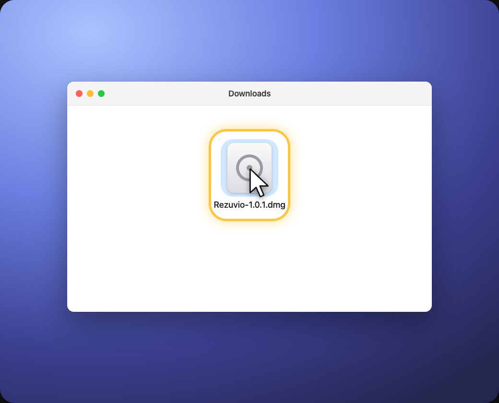
-
Seret ke Applications
Di jendela yang terbuka, seret ikon Rezuvio ke folder Applications di sebelahnya.
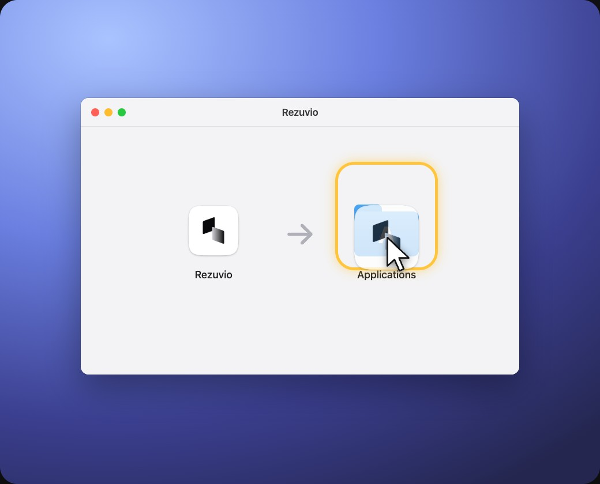
-
Buka Rezuvio
Buka folder Applications, lalu klik dua kali Rezuvio.
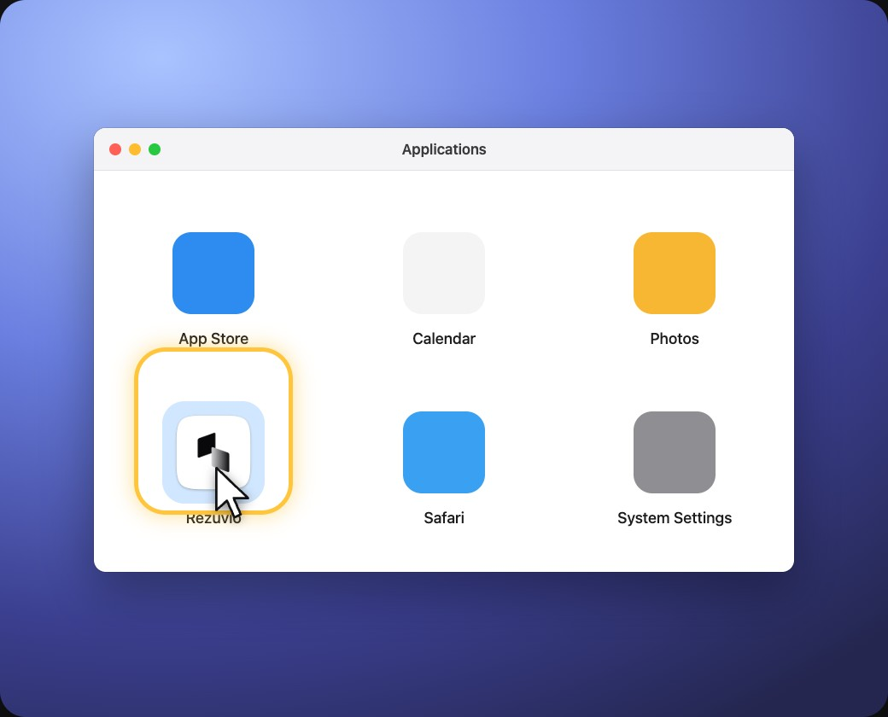
-
macOS menolak sekali, itu wajar
Rezuvio belum didaftarkan ke Apple, jadi macOS bertanya dulu. Klik Done. Jangan pilih Move to Trash.
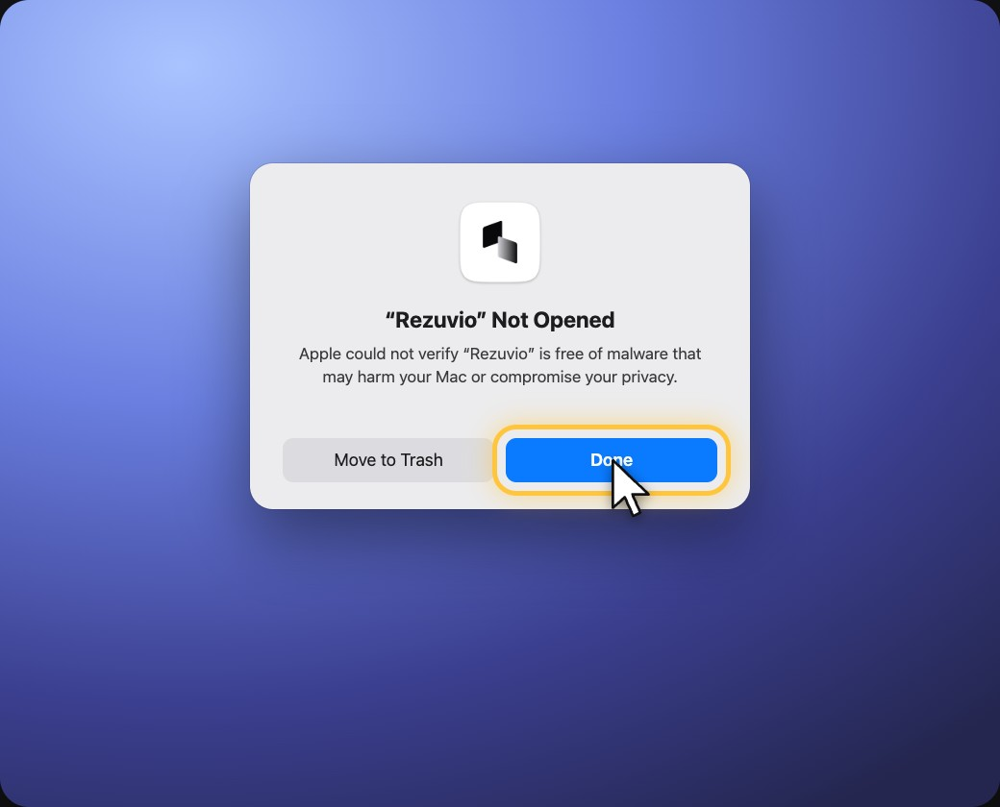
-
Izinkan di System Settings
Buka System Settings (menu Apple di pojok kiri atas), pilih Privacy & Security, gulir ke bawah sampai bagian Security, lalu klik Open Anyway di baris Rezuvio.
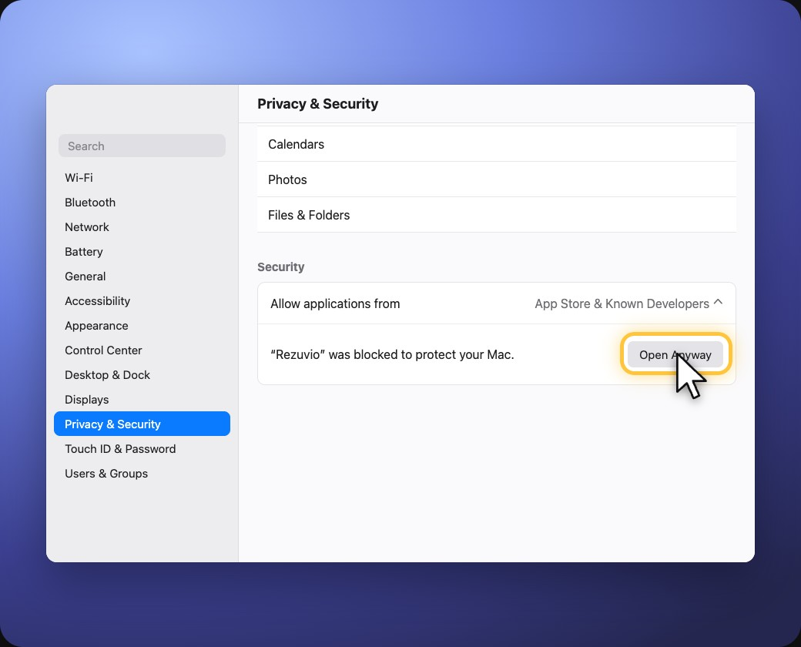
-
Konfirmasi sekali lagi
Klik Open Anyway di dialog yang muncul, lalu masukkan password Mac atau pakai Touch ID.
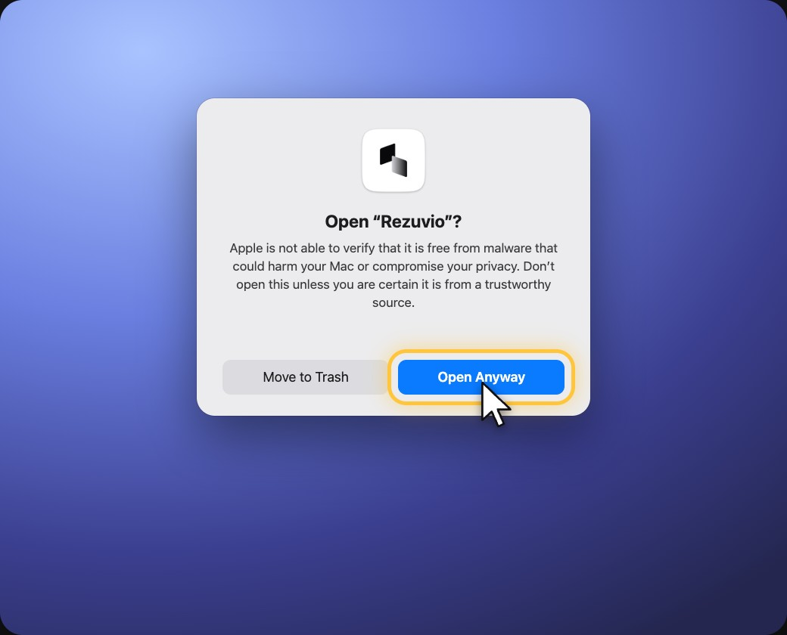
-
Aktifkan lisensi
Ketik kode lisensi dari email pembelian (RZV-XXXX-XXXX-XXXX), lalu klik Activate. Butuh internet di aktivasi pertama.
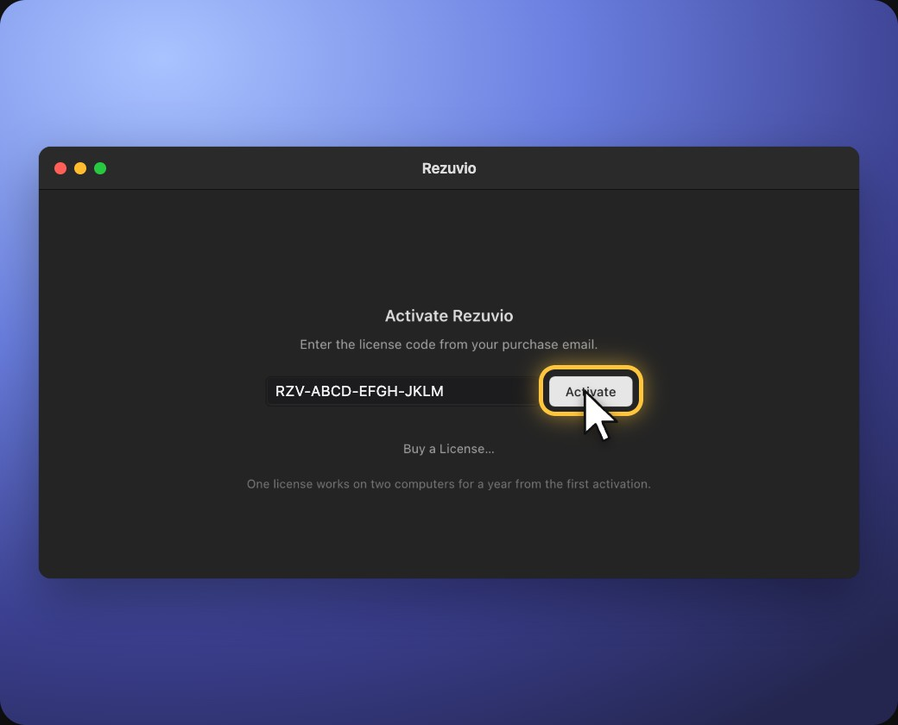
Langkah 4 sampai 6 cukup sekali. Sesudah itu Rezuvio terbuka seperti app lain.
Windows
Unduh Rezuvio untuk Windows (1,2 GB)Windows 10 (versi 1809 atau lebih baru) atau Windows 11, 64-bit. RAM 16 GB disarankan.
-
Unduh installer
Unduh Rezuvio-Setup-1.0.1.exe. Kalau browser bilang file ini jarang diunduh, pilih Keep (di Edge: ikon titik tiga, lalu Keep, lalu Keep anyway). Lalu klik dua kali file-nya.
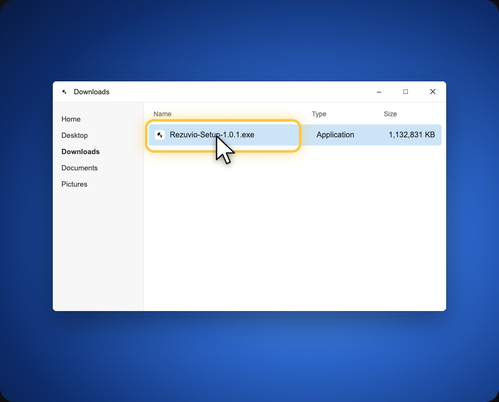
-
Windows bertanya dulu
Muncul Windows protected your PC karena installer ini belum bersertifikat. Klik More info.
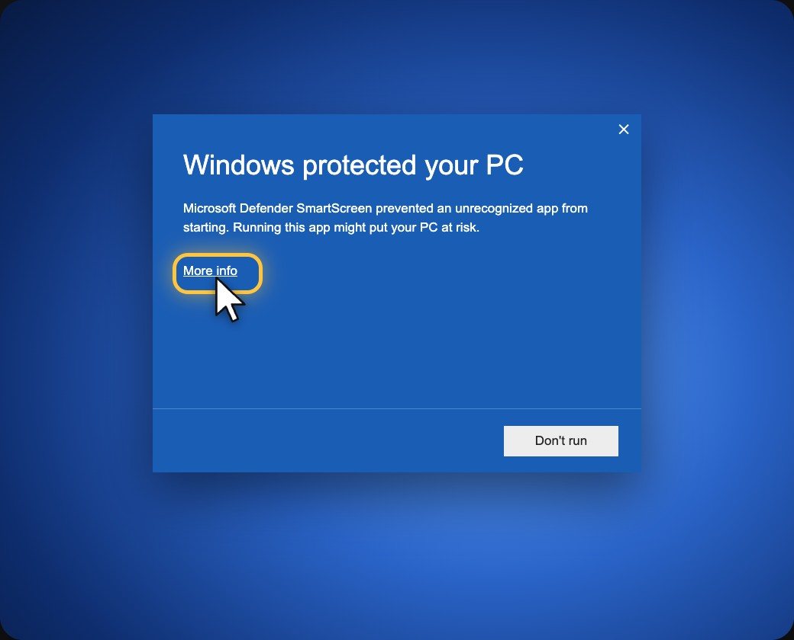
-
Jalankan installer
Klik Run anyway.
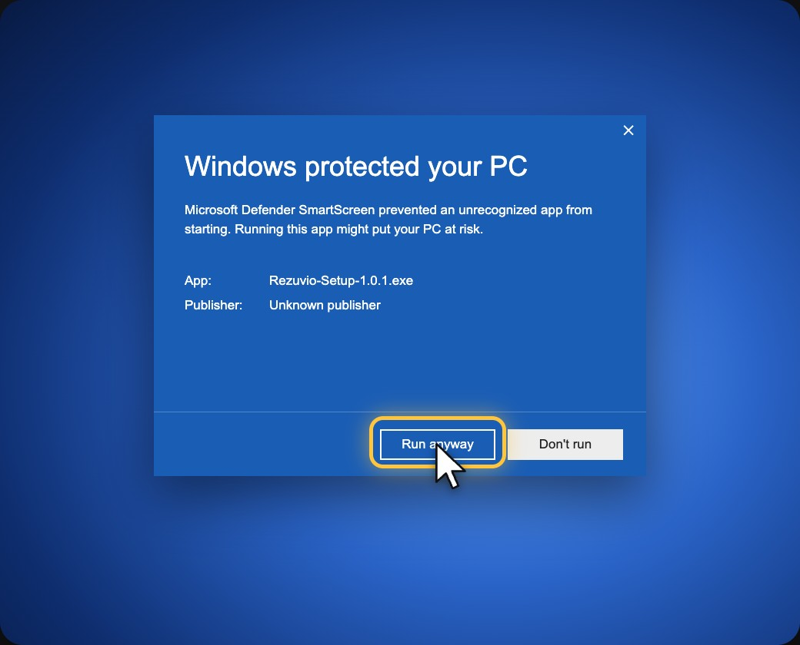
-
Pasang
Klik Next, lalu Install, dan tunggu sampai selesai. Shortcut di desktop boleh dicentang kalau mau.
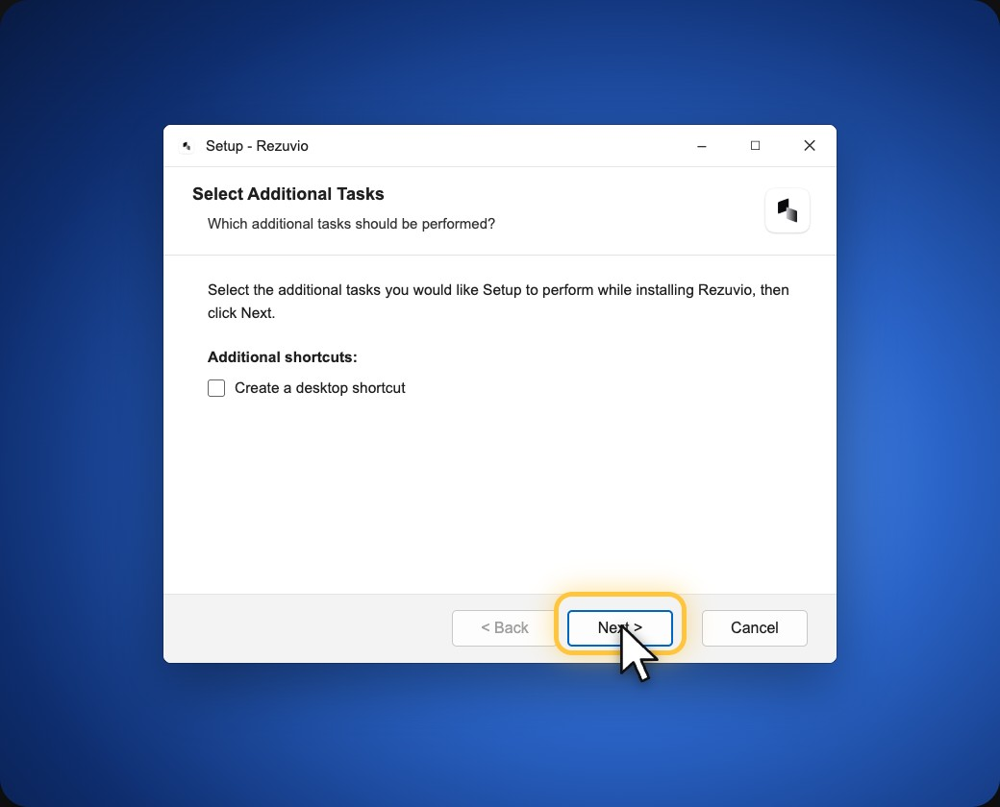
-
Buka Rezuvio
Biarkan Open Rezuvio tercentang, lalu klik Finish. Berikutnya Rezuvio bisa dibuka dari menu Start.
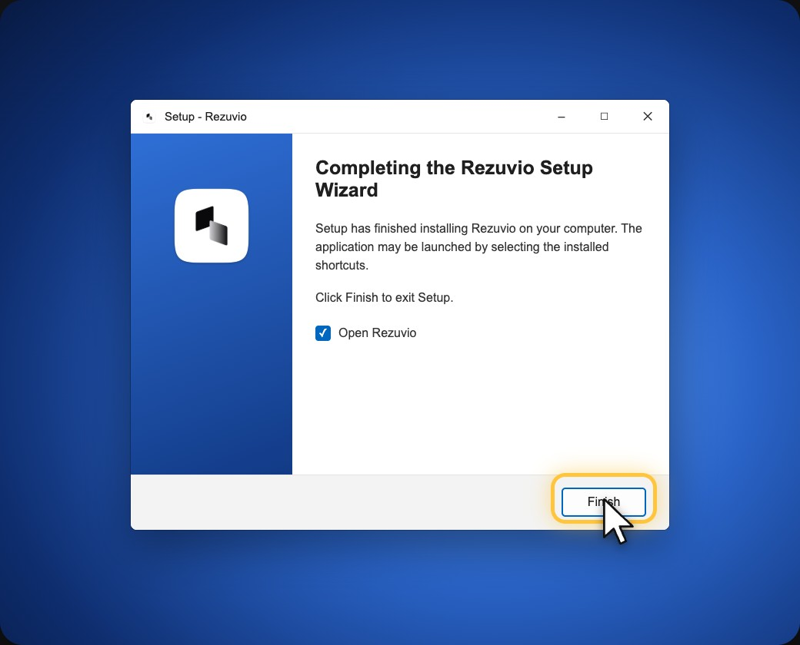
-
Aktifkan lisensi
Ketik kode lisensi dari email pembelian (RZV-XXXX-XXXX-XXXX), lalu klik Activate. Butuh internet di aktivasi pertama.
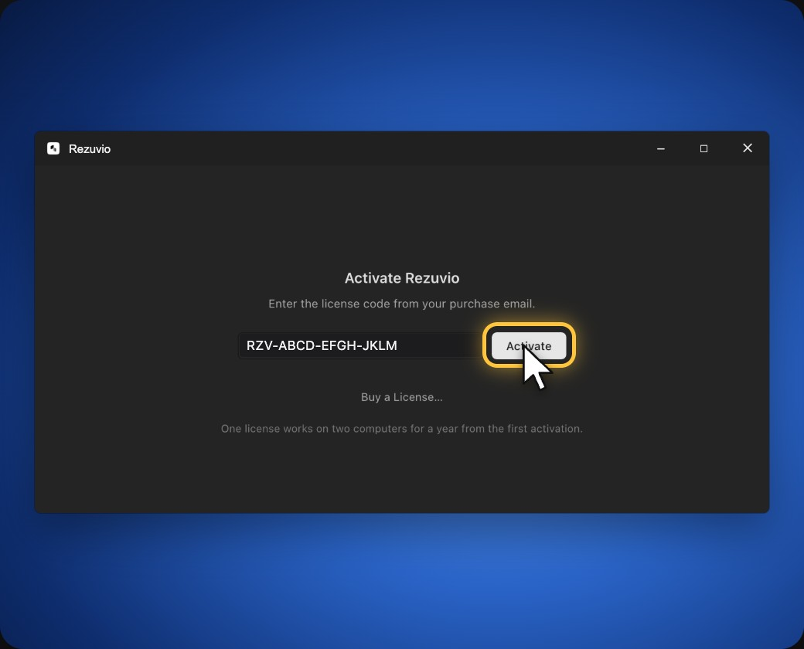
Peringatan Windows hanya muncul sekali, waktu memasang.
Lisensi
- Satu kode untuk 2 komputer (Mac atau Windows), berlaku 1 tahun sejak aktivasi pertama.
- Butuh lebih dari 2 komputer? Beli tambah komputer di toko, Rp 300.000 per komputer. Isi kode lisensimu waktu checkout, lalu aktifkan Rezuvio di komputer berikutnya dengan kode yang sama. Tidak ada kode baru. Komputer tambahan ikut masa lisensi kodemu, paling banyak 10 komputer per kode.
- Rezuvio perlu tersambung internet paling tidak sekali tiap 14 hari.
- Ganti komputer: di layar awal Rezuvio klik License…, lalu Release This Mac atau Release This PC. Sesudah itu kodenya bisa dipakai di komputer lain.
- Update kecil diunduh sendiri oleh Rezuvio dan dipakai waktu app dibuka berikutnya.
- Foto diproses di komputermu sendiri dan tidak pernah diunggah.
Gabung grup WhatsApp pembeli Rezuvio untuk kabar update dan tanya-jawab. Ada kendala waktu memasang? Tanya di grup itu, atau balas email pembelianmu.